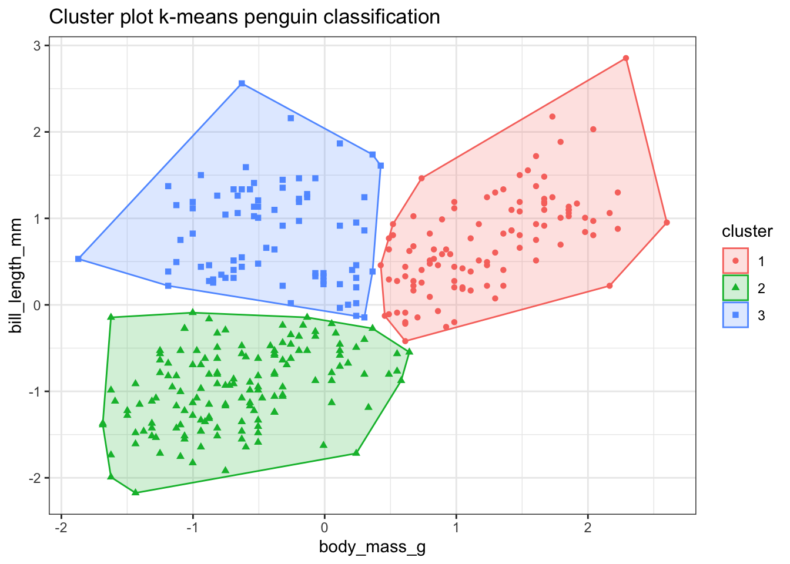
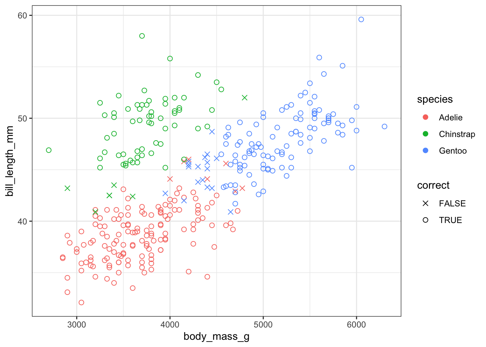

library(tidyverse)
library(tidymodels)
library(palmerpenguins)
library(factoextra)
library(janitor)
library(gt)
set.seed(123)day 13_clusters
Today I am again departing from Our World in Data to play around with something I know nothing about: k-means clustering. This animation by Allison Horst from the tidymodels documentation is super cute and explains what k-means clustering does.

https://www.tidymodels.org/learn/statistics/k-means/
The penguins data from the palmerpenguins package seemed like a good place to start.
#read the dataset
penguins <- penguins %>%
na.omit()
# pull just species for later
species <- penguins %>%
select(species)Body mass x bill length
I am interested in whether we can cluster the penguins using information about their body mass and bill length. Here I am selecting just those variables, scaling the data and then using the kmeans function to compute 3 clusters. The output shows which cluster the model has assigned each data point to and tells us that this cluster arrangement accounts for 73% of the variance.
# select a subset of the variables
bodymass_bill <- penguins %>%
select(body_mass_g, bill_length_mm)
# scale the data
bodymass_bill_scaled <- scale(bodymass_bill)
# compute 3 clusters
km_bodymass_bill <- kmeans(bodymass_bill_scaled, centers = 3)
km_bodymass_billK-means clustering with 3 clusters of sizes 106, 148, 79
Cluster means:
body_mass_g bill_length_mm
1 1.2331389 0.7262020
2 -0.6697839 -0.9559782
3 -0.3998065 0.8165489
Clustering vector:
[1] 2 2 2 2 2 2 2 2 2 2 2 2 2 2 3 2 2 2 2 2 2 2 2 2 2 2 2 2 2 2 2 2 2 2 2 2 2
[38] 2 3 2 2 2 2 2 2 2 2 2 2 2 2 2 2 2 2 2 2 2 2 2 2 2 2 2 2 2 2 3 2 2 2 2 2 2
[75] 2 1 2 2 2 2 2 2 2 2 2 2 2 2 2 2 2 2 2 2 2 2 2 2 2 2 2 2 2 1 2 1 2 2 2 2 2
[112] 2 2 2 2 2 2 2 2 2 2 2 2 3 2 2 2 2 2 2 2 2 2 2 2 2 2 2 2 2 2 2 2 2 2 2 3 1
[149] 3 1 1 1 1 1 3 1 2 1 1 1 3 1 2 1 1 1 1 1 3 1 1 1 1 1 1 1 1 1 1 1 1 1 1 3 1
[186] 2 1 3 1 1 1 3 1 1 1 1 1 3 1 1 1 3 1 3 1 3 1 3 1 1 1 1 1 1 1 1 1 1 1 1 1 1
[223] 1 1 1 1 1 1 1 1 1 1 1 1 1 1 1 1 1 1 1 1 1 1 1 1 1 1 1 1 1 1 1 1 1 1 1 3 1
[260] 1 1 1 1 1 1 3 3 3 3 3 3 3 3 3 3 3 3 3 3 3 3 3 3 3 3 2 3 2 3 3 3 3 3 3 3 2
[297] 3 2 3 3 3 3 1 3 3 3 3 3 3 3 3 3 3 3 3 3 3 3 3 2 3 3 3 3 3 3 3 3 3 2 3 3 3
Within cluster sum of squares by cluster:
[1] 62.12498 74.59241 43.24261
(between_SS / total_SS = 72.9 %)
Available components:
[1] "cluster" "centers" "totss" "withinss" "tot.withinss"
[6] "betweenss" "size" "iter" "ifault" plot
To visualise the clusters I am using the fviz_cluster() function from the factoextra package.
fviz_cluster(km_bodymass_bill, data = bodymass_bill,
show.clust.cent = FALSE, label=NA) +
theme_bw() +
labs(title = "Cluster plot k-means penguin classification")
Well that was almost too easy. Those clusters look nice but I know that the model isn’t 100% accurate. Which points have been misclassified?
Here I am using augment() from tidymodels to add the cluster information to the original data, and then joining the species vector onto that dataframe, so that I end up with a joined dataframe that includes information about species, body mass, bill length and the cluster values. Then I mutate a new variable that codes whether each data point was correctly classified or not.
# use augment to add clusters to original data
clusters <- augment(km_bodymass_bill, bodymass_bill)
# add species column to clusters
joined <- bind_cols(species, clusters) %>%
rename(cluster = .cluster) %>%
mutate(correct = case_when(species == "Adelie" & cluster == 2 ~ "TRUE",
species == "Gentoo" & cluster == 1 ~ "TRUE",
species == "Chinstrap" & cluster == 3 ~ "TRUE",
TRUE ~ "FALSE"))Then I am using tabyl from janitor to count the misclassifications by species and plotting by species and classification accuracy.
This shows that most of the Adelie and Chinstrap penguins are grouped into the same cluster but some of the smaller Gentoo penguins seem to have been misclassified.
joined %>%
tabyl(species,correct) %>%
gt()| species | FALSE | TRUE |
|---|---|---|
| Adelie | 7 | 139 |
| Chinstrap | 7 | 61 |
| Gentoo | 17 | 102 |
joined %>%
ggplot(aes(x = body_mass_g, y = bill_length_mm, colour = species, shape = correct)) +
geom_point(size = 2) +
theme_bw() +
scale_shape_manual(values=c(4, 1))